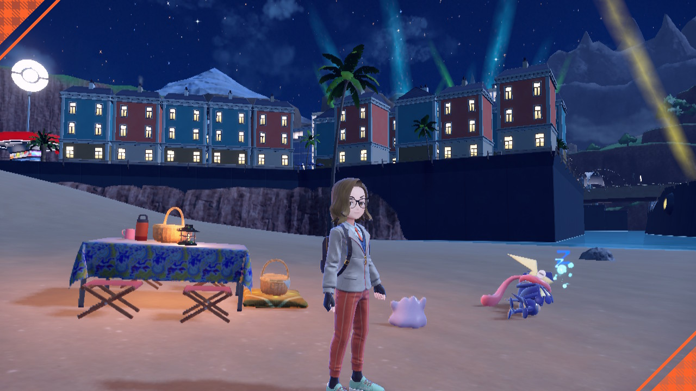
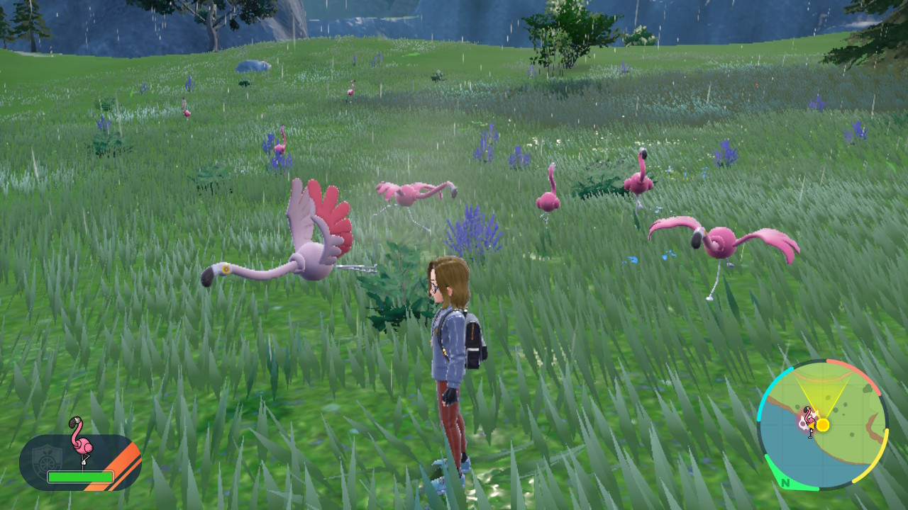
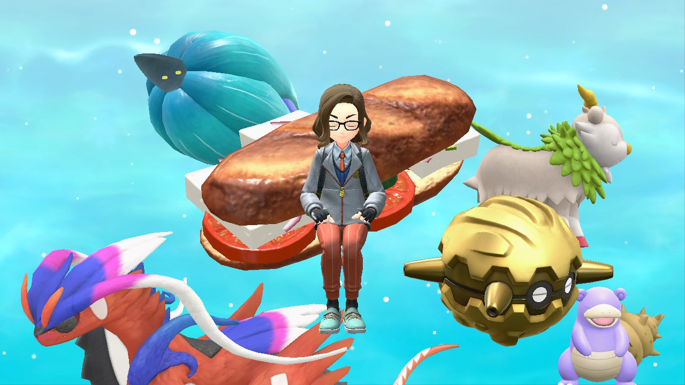

A guide for Pokémon Scarlet and Violet
The Masuda Method is a simple, yet boring, method of shiny hunting. It consists of putting two Pokémon breeding in a Picnic, with one parent being from a different language game than your own. Usually players trade Ditto for this purpose since it's the only Pokémon able to breed with every Pokémon that can produce eggs.
After you collect enough eggs in the picnic basket, add them to your party, grab a Pokémon with the Flame Body ability, and hop on your legendary Pokémon to travel the distance to hatch all those eggs. Hopefully one of them ends up shiny!
Mass Outbreaks are in-game events that happen every 24h. When you boot up the game you should be notified there are mass outbreaks happening. If you open your Map you can check what Pokémon are spawning in this method. After you pick your target you should travel to the corresponding location and start battling the outbreak Pokémon, I recommend using the Let's Go battle mode. After you defeat 60+ encounters you will receive a text notifying you that there are barely any pokémon left from the original outbreak.
After this message you can just wait for Pokémon to spawn in and out. Some methods to accelarate this process are hopping in and out of a Picnic or leaving the area and coming back. After a while, if you're lucky you might find a shiny Pokémon!
This method is very effective for hunting Pokémon that can't be bred or are unavailable in Mass Outbreaks. The catch here is that you'll have to sacrifice those very hard to find Herba Mystica. If parting ways with these rare ingredients is not a problem just follow the recipes in the image bellow. Don't forget to use the typing matching the Pokémon you're hunting for.
Below I'll list the recipes for those sparkling sandwiches for every type.
1 - Use one "serving" of the following ingredients:
2 - Use three "servings" of the ingredient for the type you need:
| Type dependent ingredients | |||
|---|---|---|---|
| Normal | Tofu | Flying | Prosciutto |
| Fire | Red Pepper | Psychic | Onion |
| Water | Cucumber | Bug | Cherry Tomato |
| Electric | Yellow Pepper | Rock | Bacon |
| Grass | Lettuce | Ghost | Red Onion |
| Ice | Klawf Stick | Dragon | Avocado |
| Fighting | Pickle | Dark | Smoke Fillet |
| Poison | Green Pepper | Steel | Hamburger |
| Ground | Ham | Fairy | Tomato |
3 - Add any two Herba Mysticas:
4 - Make the Sandwich!
The effects of the sandwich will last for 30 mins and can even stack with the Mass Outbreak odds for increased chance of finding the shiny.